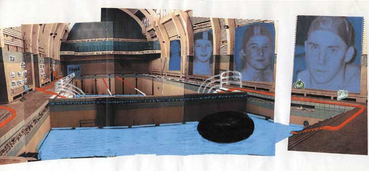
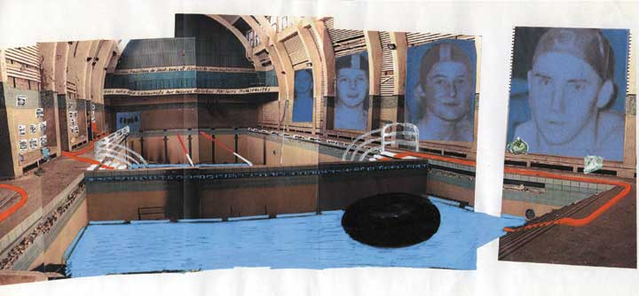
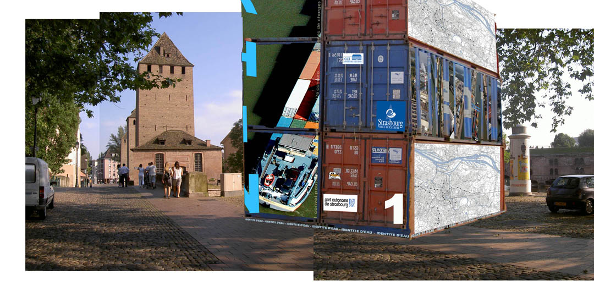

L'idée de cette association est née de la rencontre de deux plasticiennes et d'une envie commune de créer un projet à partir d'un espace précis. Il s'agit de prendre en compte la situation géographique, historique et sociale du lieu d'exposition. D'investir ce lieu dans la totalité de son espace. De raconter une histoire en forme de parcours en créant un lien entre la vie courante et la vision de plusieurs artistes.
Nous souhaitons faire participer à ce projet des créateurs issus d'horizons différents tels que : musiciens, danseurs, vidéastes, performeurs, graphistes ou autres ...
Nous sommes une association itinérante puisque notre souhait est de monter une exposition spécifique et propre à l'espace proposé. Tout notre travail se construit autour du lieu. L'espace investi peut être en activité ou en friche. L'essentiel étant de rendre hommage au vécu. Il nous semble important aujourd'hui de trouver un autre moyen d'aborder l'art que celui des musées et galeries d'exposition. Nous nous efforçons également de rendre accessible au plus grand nombre, la vision de chaque artiste.

SADOWSKI.FR..............
